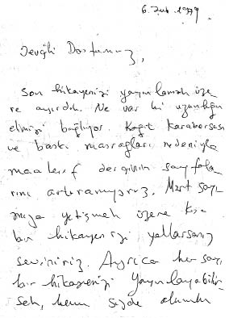
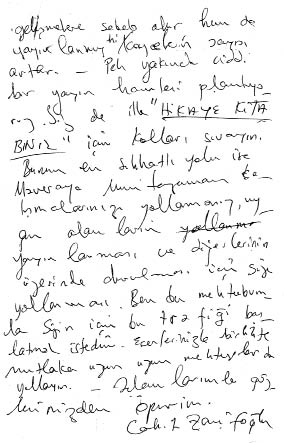

17.11.1981
Sevgili Dostum,
Mektubunu ve çizgilerini memnunlukla aldım. Aboneler için de çok teşekkür. İlk ciddi ve toplu abone listesi. Bu yönünü de takdir ettim. Umuyorum yeni Maverayı seveceksin ve sayıyı 100’e çıkarmanı kolaylaştıracak. İnşallah en az 7000 tiraj olacak. 10.000’e doğru. Amblem bekliyorum.
Bir de belki 11 cm boy, 6 cm en (.......) bir “Bizim Dünyamız” çalışması çizgisi. O sayfalarımız daha da zenginleşecek. Nitekim Aralıkta inşallah göreceksin. YAZI bu çalışmanın uygun düşen bir kısmına konabilir. Çalışman elbette klişe olacak ve her sayı girecek, yani bu bölümün bir bakıma alâmeti farikası olacak, öneri olarak beş kıtayı üst üste, farklı taramalarla oturtabilirsin. Belki sathi ve zayıf bir yaklaşım oldu. Daha soyut olmalı. Aslında tam bir sabır cesaret estetik iman ve meydan okuma ile nefis bir tesbih ve nalın olmalı. İyi ama bunu bizlere bile izah edemezsin.
Neyse umarım zihnini bulandırmadım. “Bizim Dünyamız” çok kapsamlı. Basit bir mesajın bölümü değil. O sayfaları çok şuurlu olarak ve uzun bir zaman dilimi içersinde okuyucuda anlamlı birikimler İslamı bilmenin gayrı şuurî olarak ve en köklü şekilde kemikleşmesi için yayınlıyor ve plan alıyoruz Bir şey çiz isterim.
Çizgilerini müstakil sayfalara koyarız elbet. Yalnız boş kalan sayfalar bizi çok üzer o zaman. Hakkınızı yiyoruz biliyorum. Albüm projesini geliştirelim. İranlılarla ilgili albümler için soruşturacağım.
Selamlar. Daktiloyla yazamadım, yoruldum, sağ ol. Gözlerinden öperim.
Cahit Zarifoğlu[13]

